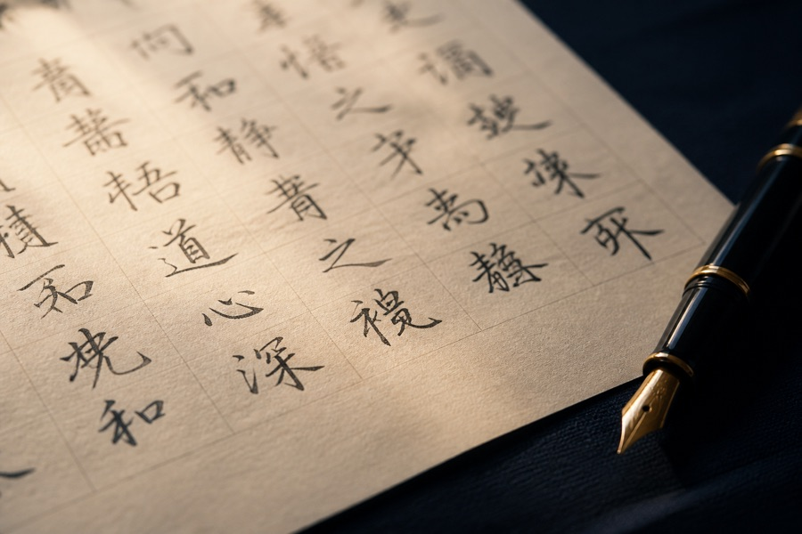

模仿签名需要提供哪些签字样本？
说明签字样本的清晰度、数量、书写角度和重复字形对分析工作的影响。
说明签字样本的清晰度、数量、书写角度和重复字形对分析工作的影响。

从起笔、连写、收笔和整体比例认识商务签字中较常见的笔迹表现。

介绍签名字形、倾斜角度、连接方式、力度变化和空间布局等观察维度。

整理字形失衡、速度不一致、连笔生硬和收笔不自然等常见问题。

样本质量、签名复杂程度、方案数量和交付周期都会影响具体费用。
当前展示最新 5 篇内容，更多文章将持续更新。
建议提供多份自然签字样本，便于观察连笔、转折、起收笔和整体比例。
可以按书写时间和使用场景分类，再选择最常用、最稳定的一组特征作为参考。
时间取决于签字复杂程度、方案数量和调整次数，简单内容通常更快。
可以，需保证图片清晰、角度端正，没有阴影或反光遮挡笔画。
通常结合样本质量、签字复杂程度、方案数量和完成时间综合评估。